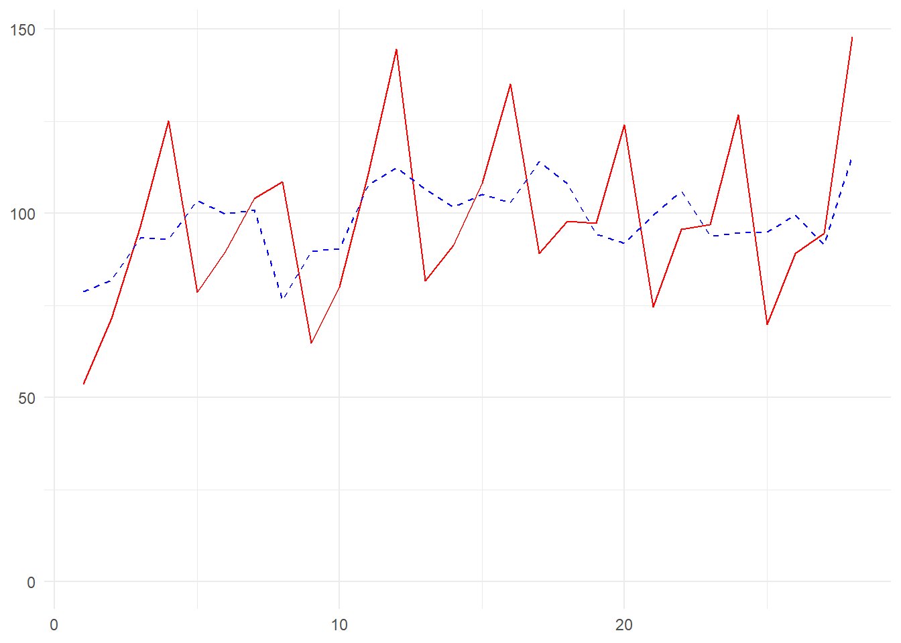
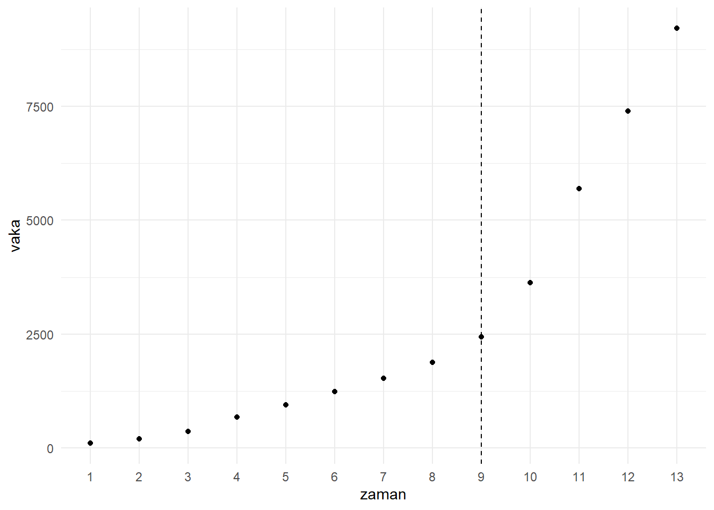

Konu 7 Kukla Değişkenli Regresyon Modeli
7.1 Kukla Değişkenlerin Yorumu
Kukla değişken derken aynı zamanda nitel değişkenlerden bahsediyoruz. Nitel değişkenlerin belirli bir sayısal değeri yoktur. Yani, nominal ölçek değişkenlerdir. Ama biz 0 ve 1 değerleri ile sayısallaştırıp kukla değişkenler oluşturuyoruz.
Üç tane kukla değişkenimiz vardı: female (kadın ise 1; değilse 0), nonwhite (beyaz olmayan işçi ise 1; değilse 0), union (sendikalı bir iş ise 1; değilse 0).
Kukla değişkeni D (dummy) ile ifade edelim. wage fonksiyonunu şöyle yazabiliriz:
\(wage_i = \beta_1 + \beta_2D_{2i} + \beta_3D_{3i} + \beta_4D_{4i} + \beta_5education_i + \beta_6exper_i + \epsilon_i\)
\(D_{2i}: kadın = 1; erkek = 0\)
\(D_{3i}: beyaz değil = 1; beyaz = 0\)
\(D_{4i}: sendikalı = 1; sendikasız = 0\)
library(readxl);library(tidyverse);library(magrittr);library(segmented)
setwd("C:/Users/datanerd/Desktop/Github/rEkonometri/data")
df1 <- read_excel("Table1_1.xls")
df2 <- read_excel("Table3_6.xls")
df3 <- read_excel("Table3_10.xls")df1 %<>%
dplyr::select(wage, female, nonwhite, union, education, exper)
model <- lm(formula = wage ~ female + nonwhite + union + education + exper, data = df1)
summary(model)##
## Call:
## lm(formula = wage ~ female + nonwhite + union + education + exper,
## data = df1)
##
## Residuals:
## Min 1Q Median 3Q Max
## -20.781 -3.760 -1.044 2.418 50.414
##
## Coefficients:
## Estimate Std. Error t value Pr(>|t|)
## (Intercept) -7.18334 1.01579 -7.072 2.51e-12 ***
## female -3.07488 0.36462 -8.433 < 2e-16 ***
## nonwhite -1.56531 0.50919 -3.074 0.00216 **
## union 1.09598 0.50608 2.166 0.03052 *
## education 1.37030 0.06590 20.792 < 2e-16 ***
## exper 0.16661 0.01605 10.382 < 2e-16 ***
## ---
## Signif. codes: 0 '***' 0.001 '**' 0.01 '*' 0.05 '.' 0.1 ' ' 1
##
## Residual standard error: 6.508 on 1283 degrees of freedom
## Multiple R-squared: 0.3233, Adjusted R-squared: 0.3207
## F-statistic: 122.6 on 5 and 1283 DF, p-value: < 2.2e-16Eğer modele kesme terimi dahil ettiysek ve bir nitel değişkenin m sayıda kategorisi varsa bu durumda m-1 adet kukla değişken belirleriz. Örnek olarak nonwhite değişkenine bakalım. Eğer işçi beyaz değilse 1 olarak kodladık. Zorunlu olarak beyaz olanları da 0 olarak kodlamalıyız. Bu durumda nonwhite’ın iki kategorisi olduğu için 1 tane kukla değişken belirleriz. Burada hangisine 0-1 verildiğinin bir önemi yoktur. Peki, kategorisi ikiden fazla olan bir nitel değişken olsaydı? Örneğin, 3 tane. Bu durumda en fazla iki (3-1) kukla değişkenimiz olabilir. Bu kuralı izlemezsek kukla değişken tuzağına yakalanırız. Yani, tam doğrusal bağlantı durumu. Eğer üç kategori için üç kukla değişkenimiz ve bir de kesme terimimiz varsa bu üç kukla değişkenin toplamı 1 olup bu da 1 olan kesme terimine eşit olacaktır. İşte tam doğrusallık. female örneğine bakalım. Bu örnekte kadınlar için 1; erkekler için 0 idi. Erkekler için 1; kadınlar için 0 değerini alan erkek kukla değişkenini de modele neden dahil etmiyoruz diye sorabiliriz. Bu gereksizdir. Çünkü, erkekler için kesme terimi \(\beta_1\); kadınlar için kesme terimi \(\beta_1 + \beta_2\)’dir. Sadece iki kategori olduğu için sadece iki farklı kesme terimine ihtiyacımız vardır. Bu da şu anlama gelir: \(\beta_1\)’in yanı sıra sadece bir tane kukla değişken kullanmamız gerekir. Biz de ilk başta kadınlar için bir kukla değişken kullanmayı tercih ettik.
Eğer bir nitel değişkenin m kategorisi varsa, kesme terimi dahil etmemek koşuluyla m adet kukla değişken ekleyebiliriz.
0 değerini alan kategori referanstır. Tüm karşılaştırmalar bu referansa göre yapılır.
Kukla değişkenler logaritmik yapıda belirlenemez. Çünkü, 0-1 olarak belirleniyorlar.
Her kukla parametresi bir serbestlik derecesine mal olur. Bu nedenle küçük örneklemlerde fazla kukla parametresi belirlemekten kaçınmalıyız.
Kukla değişkenler ile ilgili yorumları vermiştik. Diğer değişkenler sabit tutulduğunda;
Kuklaların yorumu:
Kadınların ortalama wage’i erkeklerin ortalama wage’inden 3.08 $ daha düşüktür (female).
Beyaz olmayan bir işçinin ortalama wage’i beyaz bir işçinin ortalama wage’inden 1.57 $ daha düşüktür (nonwhite).
Sendikalı bir işte çalışanın ortalama wage’i sendikalı bir işte çalışmayanın ortalama wage’inden 1.1 $ daha fazladır (union).
Kukla olmayanların yorumu:
Her ilave eğitim yılı için ortalama wage 1.37 $ artmaktadır (education).
Her ilave deneyim için ortalama wage 0.17 $ artmaktadır (exper).
Örneğin, female için ne dedik? Kadınların ortalama wage’i erkeklerin ortalama wage’inden… Burada erkeklere sıfır dediğimiz için referans erkek kategorisi oldu.
-7.18334 olan kesme terimi ise sıfır değeri alan tüm kategorileri işaret etmektedir. Yani, erkek, beyaz, sendikalı olmayan işçilerin beklenen ücreti. Ücret eksi çıkar mı? Yorumlarken tabi ki dikkat edeceğiz. Bunun iktisadi açıdan bir anlamı yoktur.
Bir kadın işçinin erkek işçiye göre ortalama wage’inin ne kadar düşük olduğunu biliyoruz. Ya da beyaz olmayan bir işçinin beyaz işçiye göre… Ya da sendika üyesi bir işçinin sendika üyesi olmayan bir işçiye göre… Peki, beyaz olmayan bir kadın işçinin ortalama wage’inin, sadece kadın bir işçinin veya sadece beyaz olmayan bir işçinin ortalama wage’inden farklı olması mümkün müdür?
Bunu belirlemek için kadın ve beyaz olmayan kuklaların çarpımını wage fonksiyonuna ekleriz. Bu tür çarpıma etkileşimli kukla diyeceğiz.
df1 %<>%
mutate(female_nonwhite = female * nonwhite)
model <- lm(formula = wage ~ female + nonwhite + union + education + exper + female_nonwhite, data = df1)
summary(model)##
## Call:
## lm(formula = wage ~ female + nonwhite + union + education + exper +
## female_nonwhite, data = df1)
##
## Residuals:
## Min 1Q Median 3Q Max
## -20.844 -3.746 -1.016 2.452 50.497
##
## Coefficients:
## Estimate Std. Error t value Pr(>|t|)
## (Intercept) -7.08873 1.01948 -6.953 5.67e-12 ***
## female -3.24015 0.39533 -8.196 5.96e-16 ***
## nonwhite -2.15853 0.74843 -2.884 0.00399 **
## union 1.11504 0.50635 2.202 0.02783 *
## education 1.37011 0.06590 20.791 < 2e-16 ***
## exper 0.16586 0.01606 10.326 < 2e-16 ***
## female_nonwhite 1.09537 1.01290 1.081 0.27971
## ---
## Signif. codes: 0 '***' 0.001 '**' 0.01 '*' 0.05 '.' 0.1 ' ' 1
##
## Residual standard error: 6.508 on 1282 degrees of freedom
## Multiple R-squared: 0.324, Adjusted R-squared: 0.3208
## F-statistic: 102.4 on 6 and 1282 DF, p-value: < 2.2e-16Diğer faktörler sabit tutulduğunda, kadın olmanın 3.24 $ daha düşük ortalama wage’i vardır. Beyaz olmamanın ortalama 2.16 $ daha düşük ortalama wage’i vardır. Hem kadın hem de beyaz olmamanın ise female + nonwhite + female_nonwhite = – 3.24 – 2.16 + 1.10 = -4.30 $ daha düşük ortalama wage’i vardır. Başka bir ifade ile, beyaz olmayan bir kadın sadece kadın olmaktan veya sadece beyaz olmamaktan daha düşük bir ortalama wage elde eder.
Kukla değişken olmayan örneğin, education için şu yorumu yapmıştık: Her ilave eğitim yılı için ortalama wage 1.37 $ artmaktadır. Bunu derken aslında kadın ile erkek arasında, beyaz olmayan ile beyaz arasında ve sendikalı ile sendikasız arasında aynı olduğunu kabul ediyoruz.
Ücret fonksiyonunu şöyle ifade edelim:
\(wage_i = \beta_1 + \beta_2D_{2i} + \beta_3D_{3i} + \beta_4D_{4i} + \beta_5education_i + \beta_6exper_i + \beta_7(D_{2i}*education_i) +\)
\(\beta_8(D_{3i}*education_i) + \beta_9(D_{4i}*education_i) + \beta_{10}(D_{2i}*exper_i) + \beta_{11}(D_{3i}*exper_i) +\)
\(\beta_{12}(D_{4i}*exper_i) + \epsilon_i\)
\(\beta_2, \beta_3, \beta_4\)’ü yazmıştık; önceden biliyoruz. \(\beta_7\) ile \(\beta_{11}\) arasını ise aşağıdaki gibi yorumlayacağız.
df1 %<>%
mutate(female_educ = female * education,
nonwhite_educ = nonwhite * education,
union_educ = union * education,
female_exper = female * exper,
nonwhite_exper = nonwhite * exper,
union_exper = union * exper)
model <- lm(formula = wage ~ female + nonwhite + union + education + exper + female_educ + nonwhite_educ + union_educ + female_exper + nonwhite_exper + union_exper, data = df1)
summary(model)##
## Call:
## lm(formula = wage ~ female + nonwhite + union + education + exper +
## female_educ + nonwhite_educ + union_educ + female_exper +
## nonwhite_exper + union_exper, data = df1)
##
## Residuals:
## Min 1Q Median 3Q Max
## -23.164 -3.570 -1.070 2.337 50.496
##
## Coefficients:
## Estimate Std. Error t value Pr(>|t|)
## (Intercept) -11.09129 1.42185 -7.801 1.27e-14 ***
## female 3.17416 1.96646 1.614 0.10674
## nonwhite 2.90913 2.78007 1.046 0.29556
## union 4.45421 2.97349 1.498 0.13439
## education 1.58712 0.09382 16.917 < 2e-16 ***
## exper 0.22091 0.02511 8.799 < 2e-16 ***
## female_educ -0.33689 0.13199 -2.552 0.01082 *
## nonwhite_educ -0.32186 0.19535 -1.648 0.09968 .
## union_educ -0.19832 0.19137 -1.036 0.30025
## female_exper -0.09612 0.03181 -3.022 0.00257 **
## nonwhite_exper -0.02204 0.04438 -0.497 0.61949
## union_exper -0.03345 0.04605 -0.726 0.46772
## ---
## Signif. codes: 0 '***' 0.001 '**' 0.01 '*' 0.05 '.' 0.1 ' ' 1
##
## Residual standard error: 6.478 on 1277 degrees of freedom
## Multiple R-squared: 0.3328, Adjusted R-squared: 0.3271
## F-statistic: 57.91 on 11 and 1277 DF, p-value: < 2.2e-16female_educ ve female_exper parametreleri negatif ve istatistiksel olarak anlamlıdır. Bu da education ve exper’e göre kadın işçiler için ortalama saatlik wage artış hızı, erkek işçilere göre daha düşük demektir. Aynı şekilde nonwhite_educ için yorum education’a göre wage artış hızı beyaz olmayan işçiler için negatiftir; beyaz işçilerinkinden daha düşüktür. Bu parametre %10 seviyesinde istatistiksel olarak anlamlıdır. Diğer parametreler istatistiksel olarak anlamlı değildir. Bunları modelden çıkartıp modeli yeniden kuralım.
model <- lm(formula = wage ~ female + nonwhite + union + education + exper + female_educ + nonwhite_educ + female_exper, data = df1)
summary(model)##
## Call:
## lm(formula = wage ~ female + nonwhite + union + education + exper +
## female_educ + nonwhite_educ + female_exper, data = df1)
##
## Residuals:
## Min 1Q Median 3Q Max
## -22.885 -3.552 -1.109 2.389 50.553
##
## Coefficients:
## Estimate Std. Error t value Pr(>|t|)
## (Intercept) -10.64520 1.37180 -7.760 1.73e-14 ***
## female 3.25747 1.95925 1.663 0.09664 .
## nonwhite 2.62695 2.41787 1.086 0.27747
## union 1.07851 0.50540 2.134 0.03303 *
## education 1.56580 0.09181 17.054 < 2e-16 ***
## exper 0.21262 0.02277 9.338 < 2e-16 ***
## female_educ -0.34695 0.13149 -2.639 0.00842 **
## nonwhite_educ -0.32937 0.18663 -1.765 0.07783 .
## female_exper -0.09491 0.03156 -3.007 0.00269 **
## ---
## Signif. codes: 0 '***' 0.001 '**' 0.01 '*' 0.05 '.' 0.1 ' ' 1
##
## Residual standard error: 6.474 on 1280 degrees of freedom
## Multiple R-squared: 0.332, Adjusted R-squared: 0.3278
## F-statistic: 79.52 on 8 and 1280 DF, p-value: < 2.2e-16Kategorinin 0 ve 1 olmasına göre aldığımız aksiyonlara dikkat edin.
Beyaz, erkek, sendikalı olmayan işçilerin (hepsi sıfırı temsil ediyor) ücret fonksiyonu:
\(\hat{wage_i} = -10.6452 + 1.5658education_i + 0.21262exper_i\)
Beyaz, kadın, sendikalı olmayan işçilerin ücret fonksiyonu:
\(\hat{wage_i} = (-10.6452 + 3.2574) + (1.5658 – 0.34695)education_i + (0.21262 – 0.0949)exper_i\)
\(\hat{wage_i} = -7.3878 + 1.21885education_i + 0.11772exper_i\)
Beyaz olmayan, erkek, sendikalı olmayan işçilerin ücret fonksiyonu:
\(\hat{wage_i} = (-10.6452 + 2.62695) + (1.5658 – 0.32937)education_i + 0.21262exper_i\)
\(\hat{wage_i} = -8.01825 + 1.23643education_i + 0.21262exper_i\)
Beyaz, erkek, sendikalı işçilerin ücret fonksiyonu:
\(\hat{wage_i} = (-10.6452 + 1.07851) + 1.5658education_i + 0.21262exper_i\)
\(\hat{wage_i} = -9.56669 + 1.5658education_i + 0.21262exper_i\)
Bağımlı değişken logaritmik olsaydı kukla değişkenleri nasıl yorumlayacaktık?
df1 %<>%
mutate(lnwage = log(wage))
model <- lm(formula = lnwage ~ female + nonwhite + union + education + exper, data = df1)
summary(model)##
## Call:
## lm(formula = lnwage ~ female + nonwhite + union + education +
## exper, data = df1)
##
## Residuals:
## Min 1Q Median 3Q Max
## -2.51287 -0.28288 0.00345 0.30683 1.79761
##
## Coefficients:
## Estimate Std. Error t value Pr(>|t|)
## (Intercept) 0.905504 0.074175 12.208 < 2e-16 ***
## female -0.249154 0.026625 -9.358 < 2e-16 ***
## nonwhite -0.133535 0.037182 -3.591 0.000341 ***
## union 0.180204 0.036955 4.876 1.22e-06 ***
## education 0.099870 0.004812 20.752 < 2e-16 ***
## exper 0.012760 0.001172 10.889 < 2e-16 ***
## ---
## Signif. codes: 0 '***' 0.001 '**' 0.01 '*' 0.05 '.' 0.1 ' ' 1
##
## Residual standard error: 0.4752 on 1283 degrees of freedom
## Multiple R-squared: 0.3457, Adjusted R-squared: 0.3431
## F-statistic: 135.5 on 5 and 1283 DF, p-value: < 2.2e-16Ortalama kadın işçinin ücret oranı ortalama erkek işçinin ücret oranına göre %24.92 daha düşüktür (female). Ancak doğru olan yüzde değişimi bulmak için parametrenin ters logaritmasını alıp 1’den çıkarıyoruz.
## [1] -0.2205401Ortalama beyaz olmayan işçinin ücret oranı ortalama beyaz olan işçinin ücret oranına göre %13.35 daha düşüktür (nonwhite). Doğru değer için;
## [1] -0.1250032Ortalama sendikalı olan işçinin ücret oranı ortalama sendikalı olmayan işçinin ücret oranına göre %18.02 daha yüksektir (union). Doğru değer için;
## [1] 0.19746117.2 Yapısal Değişimdeki Rolü
Kukla değişkenleri yapısal değişimlerde kullanabiliriz.
## tibble [49 x 3] (S3: tbl_df/tbl/data.frame)
## $ obs: num [1:49] 1959 1960 1961 1962 1963 ...
## $ gps: num [1:49] 84.6 84.8 91.8 100.7 104.6 ...
## $ gpi: num [1:49] 78.5 78.9 78.2 88.1 93.8 ...ABD için brüt özel yatırımlar (GPI) ile brüt özel tasarruflar (GPS) arasındaki ilişkiyi inceleyelim.
Bağımlı değişken:
- gpi: Brüt özel yatırımlar
Bağımsız değişken(ler):
- gps: Brüt özel tasarruflar
Yatırım fonksiyonu şudur:
\(GPI_t = \beta_1 + \beta_2GPS_t + u_t, \beta_2 > 0\)
\(\beta_2\), marjinal yatırım eğilimidir. Yani, 1 $ fazla tasarruf sonucunda oluşan ek yatırımdır.
ABD’nin 1981-82 döneminde girdiği resesyon yapısal bir değişim yaratmış olabilir.
Önce bunu dikkate almadan modelimizi kuralım.
df2 %<>%
mutate(r81 = ifelse(obs > 1980, 1, 0))
model <- lm(formula = gpi ~ gps, data = df2)
summary(model)##
## Call:
## lm(formula = gpi ~ gps, data = df2)
##
## Residuals:
## Min 1Q Median 3Q Max
## -275.06 -65.89 29.12 55.31 336.84
##
## Coefficients:
## Estimate Std. Error t value Pr(>|t|)
## (Intercept) -78.72105 27.48474 -2.864 0.00623 **
## gps 1.10740 0.02908 38.081 < 2e-16 ***
## ---
## Signif. codes: 0 '***' 0.001 '**' 0.01 '*' 0.05 '.' 0.1 ' ' 1
##
## Residual standard error: 114.9 on 47 degrees of freedom
## Multiple R-squared: 0.9686, Adjusted R-squared: 0.9679
## F-statistic: 1450 on 1 and 47 DF, p-value: < 2.2e-16Marjinal yatırım eğilimi 1.10 çıktı. Bu da brüt özel tasarruflar 1 $ arttığında brüt özel yatırımların 1.10 $ artacağını söyler.
Şimdi yapısal kırılmayı da dikkate alacağız. Bunun için yatırım fonksiyonunu şöyle yazalım:
\(GPI_t = \beta_1 + \beta_2GPS_t + \beta_3R1981_t + \epsilon_t\)
R1981, resesyonu ifade etmektedir ve 1981’den sonraki gözlemler 1 olacak anlamını taşır.
##
## Call:
## lm(formula = gpi ~ gps + r81, data = df2)
##
## Residuals:
## Min 1Q Median 3Q Max
## -228.98 -42.82 0.73 37.82 340.56
##
## Coefficients:
## Estimate Std. Error t value Pr(>|t|)
## (Intercept) -83.48603 23.15913 -3.605 0.000765 ***
## gps 1.28867 0.04707 27.380 < 2e-16 ***
## r81 -240.78785 53.39663 -4.509 4.46e-05 ***
## ---
## Signif. codes: 0 '***' 0.001 '**' 0.01 '*' 0.05 '.' 0.1 ' ' 1
##
## Residual standard error: 96.69 on 46 degrees of freedom
## Multiple R-squared: 0.9782, Adjusted R-squared: 0.9773
## F-statistic: 1034 on 2 and 46 DF, p-value: < 2.2e-16Kukla parametresi -240.8 istatistiksel olarak anlamlıdır ve öncesi-sonrasında ciddi bir fark olduğunu gösterir.
Kesme terimi sıfır değeri alan tüm kategorileri işaret etmektedir. Yani, 1981 öncesini. Buradan yola çıkarak -83.5 - 240.8 = -324.3 bulabiliriz. Bu da resesyon öncesi seviyesine göre çok daha düşük olduğunu gösterir.
Sadece kesme terimi değil; eğimde de değişim olabilir. Bunun için kukla değişkenini brüt özel tasarruflarla etkileşime sokup modele dahil edelim.
df2 %<>%
mutate(gps_r81 = gps * r81)
model <- lm(formula = gpi ~ gps + r81 + gps_r81, data = df2)
summary(model)##
## Call:
## lm(formula = gpi ~ gps + r81 + gps_r81, data = df2)
##
## Residuals:
## Min 1Q Median 3Q Max
## -225.79 -25.14 1.95 9.19 335.72
##
## Coefficients:
## Estimate Std. Error t value Pr(>|t|)
## (Intercept) -7.7799 38.4496 -0.202 0.8406
## gps 0.9511 0.1475 6.450 6.69e-08 ***
## r81 -357.4587 70.2863 -5.086 6.91e-06 ***
## gps_r81 0.3719 0.1548 2.403 0.0204 *
## ---
## Signif. codes: 0 '***' 0.001 '**' 0.01 '*' 0.05 '.' 0.1 ' ' 1
##
## Residual standard error: 92.03 on 45 degrees of freedom
## Multiple R-squared: 0.9807, Adjusted R-squared: 0.9794
## F-statistic: 762.5 on 3 and 45 DF, p-value: < 2.2e-161981 öncesine ait model:
\(\hat{GPI_t} = -7.7799 + 0.9511GPS_t\)
1981 sonrasına ait model ise şöyle olur:
\(\hat{GPI_t} = (-7.7799 - 357.4587) + (0.9511 + 0.3719)GPS_t\)
\(\hat{GPI_t} = -365.2386 + 1.323GPS_t\)
İki dönem arasında iki değişken arasındaki ilişkinin değişimini göstermiş olduk.
7.3 Mevsimsellikteki Rolü
Mevsimsel etkiler, yıl içinde meydana gelen, sistematik, istikrarlı, genellikle takvimle ilgili dönemsel ve devri karakterdeki etkilerdir. Aylık, üç aylık hatta haftalık veya günlük dalgalanmalar halinde görülebilirler.
Kullanacağımız veriler moda giyim satışlarına aittir.
## tibble [28 x 6] (S3: tbl_df/tbl/data.frame)
## $ sales: num [1:28] 53.7 71.5 96.4 125 78.6 ...
## $ d2 : num [1:28] 0 1 0 0 0 1 0 0 0 1 ...
## $ d3 : num [1:28] 0 0 1 0 0 0 1 0 0 0 ...
## $ d4 : num [1:28] 0 0 0 1 0 0 0 1 0 0 ...
## $ rpdi : num [1:28] 84.2 85 84.6 83.6 87.5 ...
## $ conf : num [1:28] 287 290 284 276 271 ...Bağımlı değişken:
- sales: Bin fit-karelik perakende alanı başına reel satışlar
Bağımsız değişken(ler):
d2: İkinci çeyrek için kukla
d3: Üçüncü çeyrek için kukla
d4: Dördüncü çeyrek için kukla
Yılın ilk çeyreğini referans olarak aldık.
Modeli kuralım.
##
## Call:
## lm(formula = sales ~ d2 + d3 + d4, data = df3)
##
## Residuals:
## Min 1Q Median 3Q Max
## -21.740 -5.511 1.340 7.193 17.587
##
## Coefficients:
## Estimate Std. Error t value Pr(>|t|)
## (Intercept) 73.183 3.977 18.399 1.18e-15 ***
## d2 14.692 5.625 2.612 0.0153 *
## d3 27.965 5.625 4.971 4.47e-05 ***
## d4 57.115 5.625 10.154 3.65e-10 ***
## ---
## Signif. codes: 0 '***' 0.001 '**' 0.01 '*' 0.05 '.' 0.1 ' ' 1
##
## Residual standard error: 10.52 on 24 degrees of freedom
## Multiple R-squared: 0.8235, Adjusted R-squared: 0.8014
## F-statistic: 37.32 on 3 and 24 DF, p-value: 3.372e-09Çıktılardan görebileceğimiz üzere moda satışları Noel ve diğer tatilleri içeren dördüncü çeyrekte en fazladır. Yorumlayalım: Dördüncü çeyrekteki ortalama satış değeri birinci (referans) çeyrekteki ortalama satışlardan 57 birim daha yüksektir. Dördüncü çeyrek ortalama satış değeri 73.183 + 57.115 = 130.298’dir. Diğer iki çeyrek de aynı şekilde yorumlanabilir.
Bizim amacımız bu değerleri mevsimsellikten arındırmaktı.
Adım-1: Modelden satış hacmi tahminlerini bulalım.
Adım-2: Gerçek satış hacminden tahminleri çıkararak kalıntıları bulalım.
Adım-3: Ortalama satış değerini tahmin edilen kalıntılara ekleyelim.
Mevsimsel arındırmayı gerçekleştirdik. Şimdi hem gerçek değerleri hem de arındırılmış değerleri grafiğe aktaralım.
ggplot(df3, aes(x = as.numeric(row.names(df3)))) +
geom_line(aes(y = sales), color = "red") +
geom_line(aes(y = arindirilmis), color = "blue", linetype = "dashed") +
theme_minimal() +
theme(axis.title = element_blank()) +
scale_y_continuous(limits = c(0,NA))
Modeli daha da genişletebiliriz. Aşağıdaki bağımsız değişkenleri modele ekleyelim:
rpdi: Reel kişisel harcanabilir gelir
conf: Tüketici güven endeksi
##
## Call:
## lm(formula = sales ~ d2 + d3 + d4 + rpdi + conf, data = df3)
##
## Residuals:
## Min 1Q Median 3Q Max
## -13.5677 -5.8781 0.0709 5.1689 11.8362
##
## Coefficients:
## Estimate Std. Error t value Pr(>|t|)
## (Intercept) -152.92922 52.59149 -2.908 0.008157 **
## d2 15.04522 4.31538 3.486 0.002091 **
## d3 26.00247 4.32524 6.012 4.74e-06 ***
## d4 60.87226 4.42744 13.749 2.80e-12 ***
## rpdi 1.59890 0.37016 4.320 0.000276 ***
## conf 0.29391 0.08438 3.483 0.002107 **
## ---
## Signif. codes: 0 '***' 0.001 '**' 0.01 '*' 0.05 '.' 0.1 ' ' 1
##
## Residual standard error: 8.048 on 22 degrees of freedom
## Multiple R-squared: 0.9054, Adjusted R-squared: 0.8839
## F-statistic: 42.1 on 5 and 22 DF, p-value: 1.532e-10Bu eklediğimiz değişkenler mevsimsel etkilerden arındırıldı mı?
Frisch-Waugh teoremine göre evet. Yani, modele mevimsel kuklaları katarak aslında bütün zaman serilerini mevsimsellikten arındırmış oluyoruz.
Yukarıdaki çıktı bize mevsimsel faktörleri yansıtan kesmelerin çeyrekten çeyreğe değiştiğini fakat rpdi ve conf eğim parametrelerinin baştan sona sabit kaldığını varsaymaktadır. Bu varsayımı kademeli eğim kuklaları ile test edelim.
\(Sales_t = \beta_1 + \beta_2D_{2t} + \beta_3D_{t3} + \beta_4RPDI_t + \beta_5CONF_t + \beta_6(D_2*RPDI_t) + \beta_7(D_3*RPDI_t) +\)
\(\beta_8(D_4*RPDI_t) + \beta_9(D_2*CONF_t) + \beta_{10}(D_3*CONF_t) + \beta_{11}(D_4*CONF_t) + \epsilon_t\)
Varsayımı test etmemizi sağlayacak olan \(\beta_6\)’dan \(\beta_{11}\)’e kadar olan kademeli eğim parametreleridir.
df3 %<>%
mutate(d2_rpdi = d2*rpdi,
d3_rpdi = d3*rpdi,
d4_rpdi = d4*rpdi,
d2_conf = d2*conf,
d3_conf = d3*conf,
d4_conf = d4*conf)
model <- lm(formula = sales ~ d2 + d3 + d4 + rpdi + conf + d2_rpdi + d3_rpdi + d4_rpdi + d2_conf + d3_conf + d4_conf, data = df3)
summary(model)##
## Call:
## lm(formula = sales ~ d2 + d3 + d4 + rpdi + conf + d2_rpdi + d3_rpdi +
## d4_rpdi + d2_conf + d3_conf + d4_conf, data = df3)
##
## Residuals:
## Min 1Q Median 3Q Max
## -11.2537 -4.0821 0.0971 3.1040 14.5502
##
## Coefficients:
## Estimate Std. Error t value Pr(>|t|)
## (Intercept) -191.58462 107.98136 -1.774 0.0951 .
## d2 196.70196 221.26332 0.889 0.3872
## d3 123.13869 163.43984 0.753 0.4621
## d4 50.96447 134.78844 0.378 0.7103
## rpdi 2.04979 0.79989 2.563 0.0209 *
## conf 0.28094 0.15690 1.791 0.0923 .
## d2_rpdi -1.11058 1.40395 -0.791 0.4405
## d3_rpdi -1.21807 1.13419 -1.074 0.2988
## d4_rpdi -0.04987 1.01416 -0.049 0.9614
## d2_conf -0.29482 0.38178 -0.772 0.4512
## d3_conf 0.06524 0.25986 0.251 0.8050
## d4_conf 0.05787 0.20107 0.288 0.7772
## ---
## Signif. codes: 0 '***' 0.001 '**' 0.01 '*' 0.05 '.' 0.1 ' ' 1
##
## Residual standard error: 8.157 on 16 degrees of freedom
## Multiple R-squared: 0.9293, Adjusted R-squared: 0.8807
## F-statistic: 19.12 on 11 and 16 DF, p-value: 3.777e-07Kademeli eğim parametrelerinin hiçbiri istatistiksel olarak anlamlı çıkmamıştır. Bu bize rpdi ile conf parametrelerinin sezonlar arasında değişmediğini göstermektedir. Bunun yanında mevsimsel kuklaların da istatistiksel olarak anlamlı çıkmadığını görüyoruz. Dolayısıyla, moda satışlarında mevsimsel değişimler yoktur deriz ancak kademeli eğim parametrelerini modelden çıkardığımızda (bir önceki çıktı) güçlü bir mevimsel faktör olduğunu görürüz.
7.4 Parçalı Doğrusal Regresyondaki Rolü
Parçalı doğrusal regresyonu anlamak için Türkiye’ye ait Covid-19 verilerini kullanacağız. Bu veriler 98 vaka ve sonrasına ait 13 günü kapsamaktadır.
zaman <- seq(1,13,1)
vaka <- c(98, 192, 359, 670, 947, 1236, 1529, 1872, 2433, 3629, 5698, 7402, 9217)
df <- data.frame(zaman = zaman, vaka = vaka)
ggplot(df, aes(x = factor(zaman), y = vaka)) +
geom_point() +
geom_vline(xintercept = 9, linetype = "dashed") +
theme_minimal() +
labs(x = "zaman")
Vaka sayısının 9. güne kadar normal bir seyirde giderken bundan sonra yönünü yukarı kırdığını görüyoruz. Yani, iki farklı doğru görmekteyiz. 9. gün için eşik değer diyebiliriz. İşte bu bir parçalı doğrusal regresyondur ve bu parçaların kendilerine ait eğimleri vardır. Bu ayrıklığı hesaba katmak için kukla değişkenlerden yararlanacağız:
\(Y_i = \beta_1 + \beta_2X_i + \beta_3(X_i - X^*)D_i + \epsilon_i\)
Burada, Y vaka sayısı; X zaman ya da gündür. \(X^*\) zamanın önceden bilinen eşik değeridir ve D = 1 (\(X_i > X^*\)), D = 0 (\(X_i < X^*\)) olur. \(\beta_3\) istatistiksel olarak anlamlı ise farklı eğimler olduğu sonucuna ulaşırız.
Parçalara ayrılmış regresyon doğruları şöyle olur:
\(E(Y_i) = \beta_1 + \beta_2X_i, D_i = 0\) için
\(E(Y_i) = (\beta_1 - \beta_3X^*) + (\beta_2 + \beta_3)X_i, D_i = 1\) için
\(\beta_2\) eşikten önceki regresyon doğrusunun; \(\beta_2 + \beta_3\) ise eşikten sonraki regresyon doğrusunun eğimini verir.
df$A <- df$zaman - 9 #eşik değerden çıkar.
df$D <- ifelse(df$A > 0, 1, 0) #0'dan büyükse 1; değilse 0 ata.
df$AD <- df$A * df$D #her iki sütunu çarp.
model <- lm(formula = vaka ~ zaman + AD, data = df)
summary(model)##
## Call:
## lm(formula = vaka ~ zaman + AD, data = df)
##
## Residuals:
## Min 1Q Median 3Q Max
## -257.84 -71.39 -7.90 45.57 307.69
##
## Coefficients:
## Estimate Std. Error t value Pr(>|t|)
## (Intercept) -365.27 106.90 -3.417 0.00658 **
## zaman 276.73 18.05 15.329 2.84e-08 ***
## AD 1484.80 51.56 28.796 5.94e-11 ***
## ---
## Signif. codes: 0 '***' 0.001 '**' 0.01 '*' 0.05 '.' 0.1 ' ' 1
##
## Residual standard error: 151 on 10 degrees of freedom
## Multiple R-squared: 0.9978, Adjusted R-squared: 0.9974
## F-statistic: 2286 on 2 and 10 DF, p-value: 4.948e-14Tahmin edilen bütün regresyon parametreleri tek tek (t) ve toplu (F) olarak istatistiksel açıdan anlamlıdır. İki regresyon doğrusunun da eğim parametrelerinin farklı olduğunu söyleyebiliriz.
Ortalama Vaka Sayısı = -365.27 + 276.73Zaman, Zaman < 9
Ortalama Vaka Sayısı = (-365.27 - 1484.80*9) + (276.73 + 1484.80)Zaman, Zaman > 9
Ortalama Vaka sayısı = -13728.47 + 1761.53Zaman, Zaman > 9
Eşik güne kadar zamandaki birim artış başına birim vaka sayısı 277 artarken; eşikten sonra 1762 artmıştır.